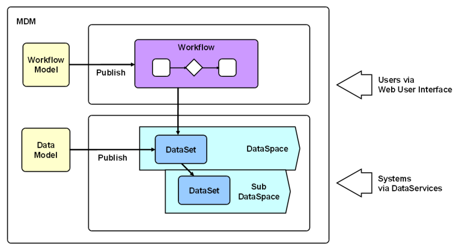

How EBX5 works
Section contents
Associated tools and notions

Master Data Management (MDM) is a way to better model, manage and ultimately govern your shared data. With data duplicated in many IT systems and shared by multiple business teams, having a single version and governance of your master data has become a critical issue.
With EBX5, business and IT users can collaborate on a single, unified solution in order to design data models and manage master data content.
EBX5 is a Master Data Management software that allows you to model any type of master data and apply governance thanks to rich features such as collaborative workflow, data authoring, hierarchy management, version control, and role-based security.
An MDM project on EBX5 starts by creating a data model. This is where you define tables, fields, links and business rules in order to describe your master data. Good examples are product catalogs, financial hierarchies, supplier lists or simply reference tables.
Your data model can then be published as a data set, which stores the actual content of your master data. A data set lives in a data space. A data space is a container which allows you to isolate your updates; this is very useful if you need to work on many parallel versions of your data, perform impact analysis or work in "staging areas".
Workflows are invaluable if you need to perform a controlled change management or approval of data through a step-by-step process involving multiple users. Once started, they send notifications to users of the number of work items available to them in a context of collaborative work.
Once everything is up and running, you can define data management processes, that you will express in the shape of workflow models in EBX5. This model will detail the tasks to be performed and any involved responsibility. It needs to be published, in order to become available for use in the shape of workflows.
Data services help integrating EBX5 to third-party systems (middleware), by allowing them to access data, or to manage data spaces and/or workflows.
Key words to understand are:
Detailed definitions can be found in the glossary.
 User guide table of contents
User guide table of contents